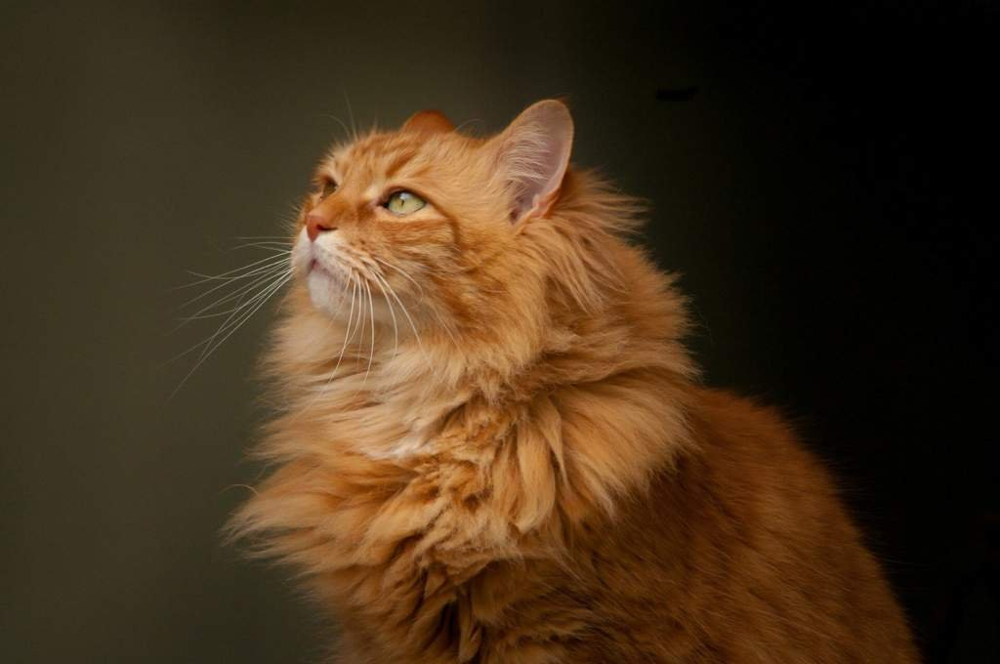
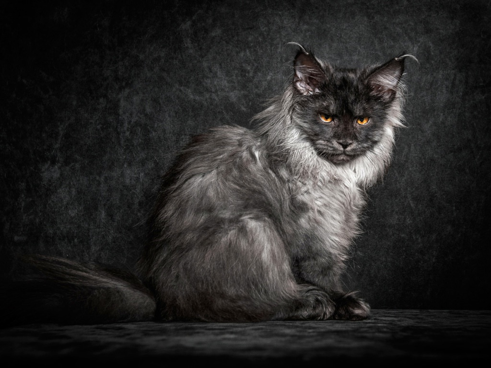
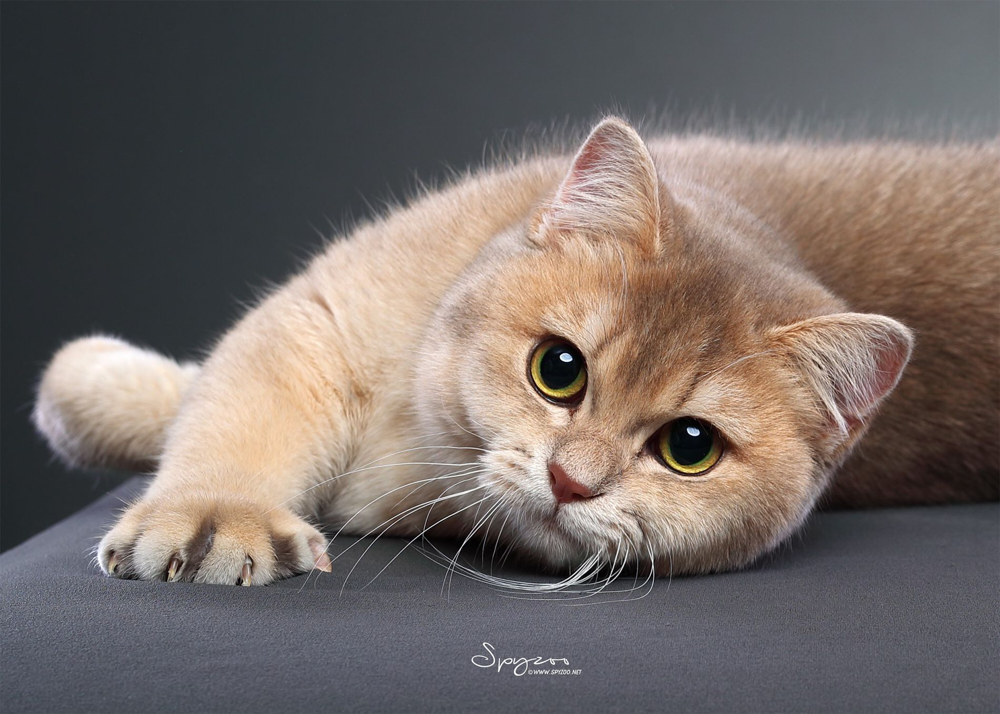
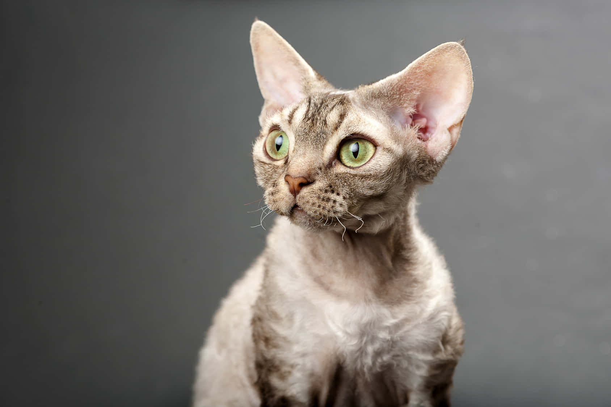

Siberian (red tabby)
Appearance at a glance:
Large, muscular forest cat with dense triple coat and ruff; rich red tabby colour gives a wild, lion-like look
Typical temperament:
Playful companion, hardy in cold climates; produces a bit less Fel d 1 allergen than average
Origin story:
Natural landrace from central & eastern Russia; formally recognised in the 1990s
">
Maine Coon (black smoke) Appearance at a glance:
One of the biggest domestic cats; long plume tail, tufted “lynx” ears; dramatic black-smoke coat with silver under-fur
Typical temperament:
Nicknamed the “gentle giant” – friendly, curious, communicates with soft chirps
Origin story:
Farm-cat/long-hair crosses in 19th-century Maine, USA
">
British Shorthair (golden shaded) Appearance at a glance:
Round, plush “teddy-bear” face, huge green eyes; dense golden coat with dark tipping
Typical temperament:
Laid-back, independent, adapts well to apartment life
Origin story:
Selectively bred in the UK since the late 1800s; golden shaded colour emerged in the 1970s
">
Devon Rex Appearance at a glance:
Very short, wavy coat, huge elfin ears, slender build, wide eyes
Typical temperament:
Highly social, bonds closely with people, loves shoulder perches
Origin story:
Began with a spontaneous curly-coat mutation in Devon, England, 1960
">